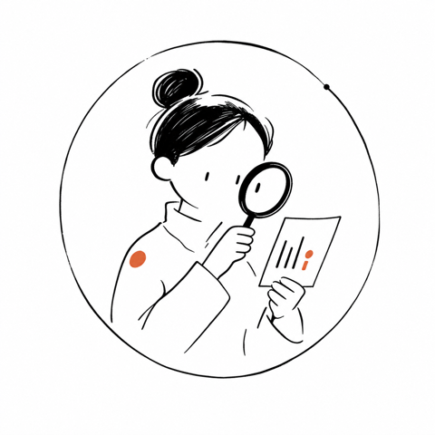

這頁的每個按鈕都是真動作：按「收下」會真的開官方頁面、複製鍵會真的寫進剪貼簿。玩完這頁，你的環境就真的裝好了——不是勾格子假裝完成。
這個深色視窗就是「終端機」：一個只能打字、沒有滑鼠按鈕的軟體，指令打完按 Enter 它才會動作。
Mac：按 cmd + 空白鍵、輸入 Terminal；Windows：按開始鍵、輸入 PowerShell。
這是你整支艦隊的駕駛艙。先選你的作業系統，再按「收下」去官方頁面下載。
下載桌面版（含 Claude Code），或用終端機指令安裝。
curl -fsSL https://claude.ai/install.sh | bash
已複製
剪貼簿權限被擋了？手動全選這段：
cmd+V 貼上、按 Enter下載桌面版（含 Claude Code），或用 PowerShell 安裝。
irm https://claude.ai/install.ps1 | iex
已複製
剪貼簿權限被擋了？手動全選這段：
ctrl+V 貼上、按 Enter| 現象 | 解法 |
|---|---|
| 終端機打指令沒反應 | 先確認你開的是「終端機」（Mac：Terminal／Windows：PowerShell），不是文字編輯器 |
裝完找不到 claude 指令 | 關掉終端機視窗、重新開一個再試一次（環境變數要重新載入） |
| 要求登入但一直轉圈 | 回瀏覽器看有沒有跳出登入頁、確認網路連線正常 |
這關是選配——只有要讓 AI 生大頭貼／圖卡時才需要，發第一篇文字帖用不到它。Codex 是 OpenAI 的副艦，需要 ChatGPT 帳號（Plus / Pro / Business 以上方案才有 Codex，免費版沒有），也需要先裝好 Node.js（下一關）。先去 ChatGPT 官方頁確認方案，再回來裝。
npm i -g @openai/codex
已複製
剪貼簿權限被擋了？手動全選這段：
Ctrl+` 打開內建終端機（不用另外開系統終端機）、貼上、按 Enter；跑完再打 codex login 登入codex 有跳出畫面嗎？| 現象 | 解法 |
|---|---|
npm 指令找不到 | 代表 Node.js 還沒裝好，回上面「⛽ 燃料」那關先領 |
裝完 codex 說沒有權限用 | 確認 ChatGPT 帳號方案是 Plus 以上，免費版目前不含 Codex |
艦隊入列（拖資料夾）本身不需要 Node.js。只有你要裝 Codex 生大頭貼／圖卡時才需要它——發第一篇文字帖用不到，教練說需要時再回來拿也不遲。
node --version 驗證node --version 有跳出版本號嗎？| 現象 | 解法 |
|---|---|
裝完 node --version 還是找不到 | 關掉終端機重開一個 |
| 不確定要不要裝 | 不確定就先跳過，需要時教練會提醒你回來領 |
把「宇宙艦隊」這支團隊請進你的 Claude Code——不用打任何指令、不用開終端機，用「拖資料夾」就好。桌面版 Claude Code 每次開啟都會自動掃 ~/.claude/skills 這個資料夾，所以只要把艦隊放進去，它就認得。
第一步：下載艦隊、解壓縮
第二步：複製艦隊的家（存放路徑）
~/.claude/skills
已複製
剪貼簿權限被擋了？手動全選這段：
第三步：打開資料夾、把五個艦員拖進去
Cmd+Shift+G（Windows 用檔案總管網址列），貼上剛剛複製的路徑、按 EnterCmd+A 全選、拖住任一個整批拖進去。完成後 ~/.claude/skills 底下要直接看到 coach、navigator、ghostwriter、brand-guard、threads-setup（不是再包一層）第四步：完全關掉 Claude Code 再重開，讓它重新認人
~/.claude/skills 底下直接多出那五個資料夾（不是再包一層）。重開 Claude Code 後、打「教練、報到」它就會回話。
~/.claude/skills 裡直接看得到那五個資料夾了嗎？| 現象 | 解法 |
|---|---|
打 /plugin 說不認得 | 桌面版聊天視窗不吃 /plugin（那是終端機版才有）。不要打指令，改用這頁的拖資料夾法 |
找不到 ~/.claude/skills | 它是隱藏資料夾，Finder 按 Cmd+Shift+G 貼路徑直接跳過去；若整個 .claude 都沒有，先開一次 Claude Code 讓它自己建 |
| 拖了、Claude Code 還是不認得 | 確認底下直接就是那五個資料夾（不是再包一層），然後完全關掉 Claude Code 再開 |
這是真正的驗證關——網頁沒辦法偵測你電腦裝了什麼，但教練可以。複製下面這句，貼進 Claude Code：
教練、報到
已複製
剪貼簿權限被擋了？手動全選這段：
cmd+V（Windows 為 ctrl+V）貼上、按 Enter貼完你會看到：教練列出艦員清單並告訴你自檢結果。
教練會自檢你的環境，通過後會給你一組通關碼。把它輸入在下面：
| 現象 | 解法 |
|---|---|
| 教練說某個艦員沒裝好 | 回對應那關重新走一次，教練會白話講缺哪個寶藏 |
| 不確定通關碼打對了沒 | 通關碼是四個字，注意有沒有多打空格 |
五個寶藏全部到手，你的環境真的裝好了。
開課見，艦長。
如果你未來要讓艦隊自動幫你發 Threads，得先在 Meta 官方登記一個開發者身分。步驟跟 skills/threads-setup/SKILL.md 第一關、第二關完全一致——這裡不重複寫一套，直接跟教練或接入精靈走那份文件。
送出權限申請後可能會進入「應用程式審查」等待期，實務上常抓 1-2 週；等待期間可以先完成第一章的其他關卡，不冷場。
| 現象 | 解法 |
|---|---|
| 「建立應用程式」按鈕找不到 | 第一次用會被要求先「註冊成為開發人員」，跟著畫面同意條款即可 |
| 不知道選哪個應用程式類型 | 認關鍵字「API」「開發」，選錯了之後還能再加使用案例，不是致命錯誤 |
skills/threads-setup/SKILL.md 第一、二關。